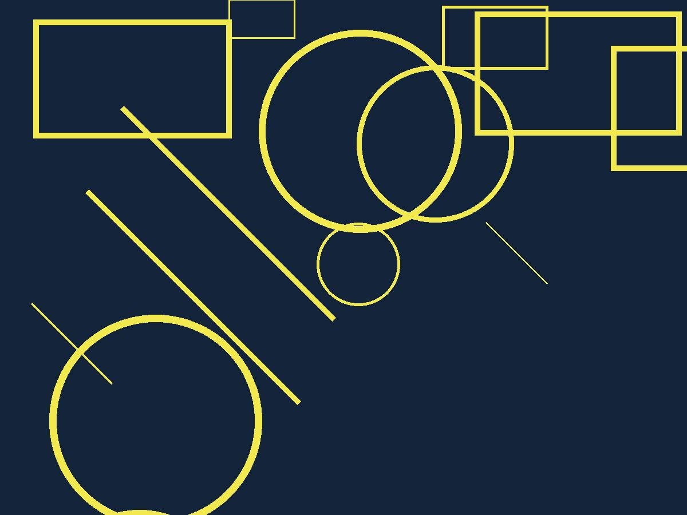
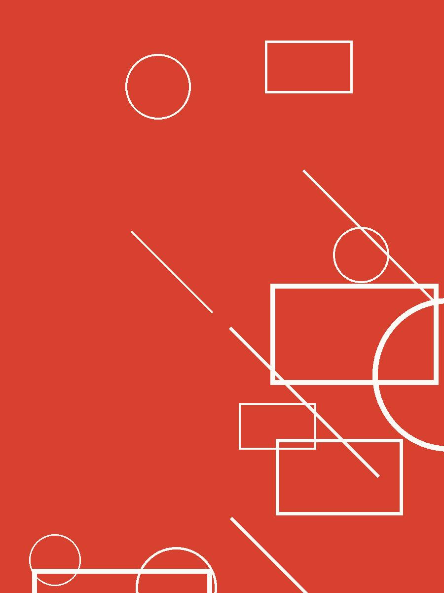
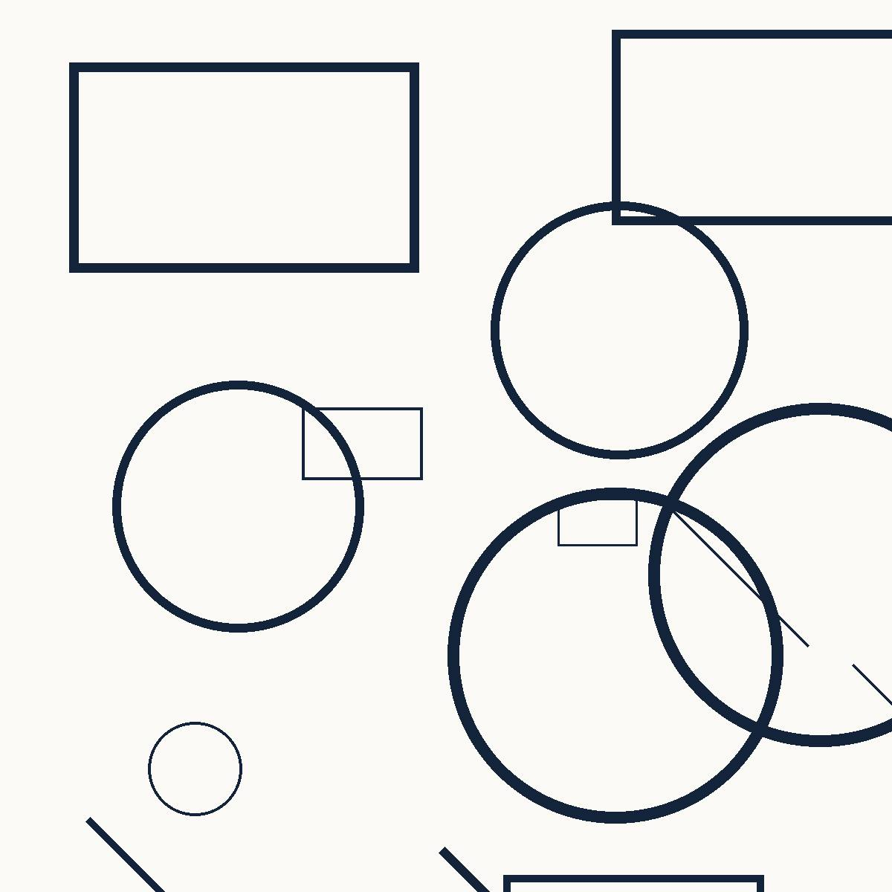

Cámaras sordas
2026 · Gres y grabaciones de campo · Barcelona

Cinco recipientes cerrados. Cada uno guarda dentro la grabación del día en que se coció.
2026 · Gres y grabaciones de campo · Barcelona

Cinco recipientes cerrados. Cada uno guarda dentro la grabación del día en que se coció.
2025 · Instalación sonora · Girona

Piezas colgadas que suenan cuando alguien cruza la sala. Con la sala vacía, no suena nada.
2024 · Cerámica y papel · Vic

Cuarenta muestras de barro recogidas en un radio de treinta kilómetros, cocidas todas a la misma temperatura.